GaugeBench report
Suite instruments · generator v0.1.0 · seed 21
Why candidates were rejected
Every candidate image is re-read from pixels and checked for visibility and ambiguity before it is published. Rejected candidates are regenerated with a new seed.
Scorer sanity checks
Reference answerers with known behaviour. Oracle must score 100%; near-miss (just outside tolerance) must score 0%; shortcut heuristics should stay low.
| Answerer | Overall | Read value | Zone status | Set-point deviation | Panel alarm | Panel max (mixed ranges) | Change over time | Dual scale | Tank level | Panel count | Clock-dial meter | Vernier caliper | Digital display | Inspection round |
|---|---|---|---|---|---|---|---|---|---|---|---|---|---|---|
| oracle | 100% | – | – | – | – | – | – | – | – | – | 100% | 100% | 100% | – |
| near_miss | 0% | – | – | – | – | – | – | – | – | – | 0% | 0% | 0% | – |
| random | 0% | – | – | – | – | – | – | – | – | – | 0% | 0% | 0% | – |
| shortcut | 17% | – | – | – | – | – | – | – | – | – | 0% | 0% | 50% | – |
Leaderboard
| Model | Tasks | Overall | Read value | Zone status | Set-point deviation | Panel alarm | Panel max (mixed ranges) | Change over time | Dual scale | Tank level | Panel count | Clock-dial meter | Vernier caliper | Digital display | Inspection round | Parse fails |
|---|---|---|---|---|---|---|---|---|---|---|---|---|---|---|---|---|
| gemini-3.5-flash-lite | 24 | 25% | – | – | – | – | – | – | – | – | – | 12% | 0% | 62% | – | 0 |
Accuracy by difficulty level
Mixed suite: level 1 = clean dial, level 5 = all factors may be hard at once.
All families
Capability curves (one factor at a time)
Read-value tasks on a clean dial where exactly one visual factor is changed. A drop pinpoints the specific visual skill the model lacks.
How wrong are the wrong numbers?
Numeric answers, error measured in multiples of the allowed tolerance (1× = half a dial division). Near misses suggest imprecise reading; large errors suggest misreading the scale, multiplier or needle.
| Model | ≤1× (correct) | 1–2× | 2–5× | 5–20× | >20× | No number |
|---|---|---|---|---|---|---|
| gemini-3.5-flash-lite | 31% | 0% | 0% | 0% | 69% | 0% |
Failure gallery — gemini-3.5-flash-lite
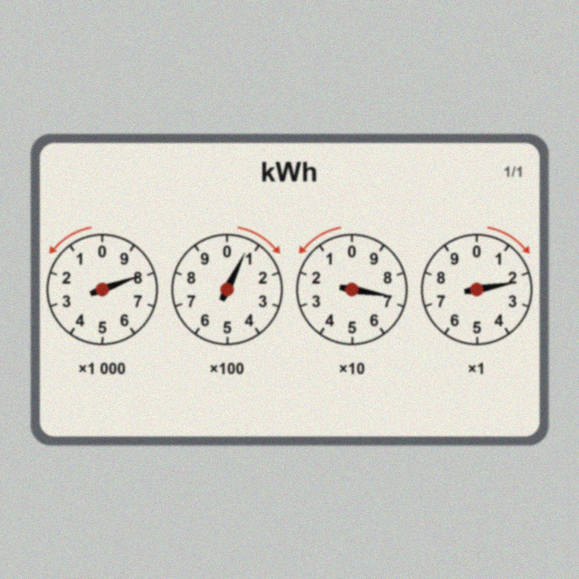
Clock-dial meter · dial_meter-L1-0000
Key: 8072 ± 0 · Model: 7062
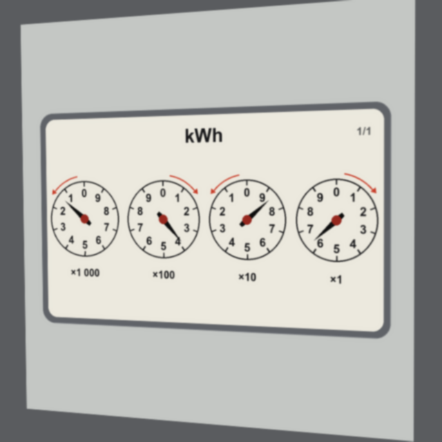
Clock-dial meter · dial_meter-L2-0001
Key: 1386 ± 0 · Model: 1486
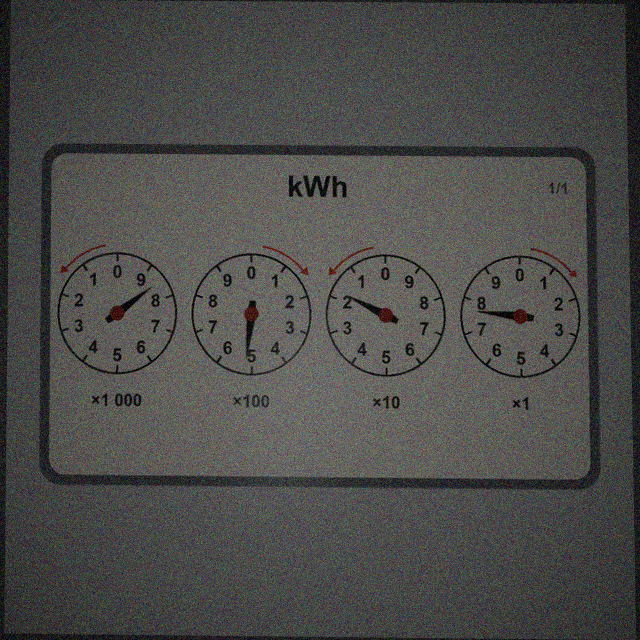
Clock-dial meter · dial_meter-L3-0002
Key: 8517 ± 0 · Model: 8017
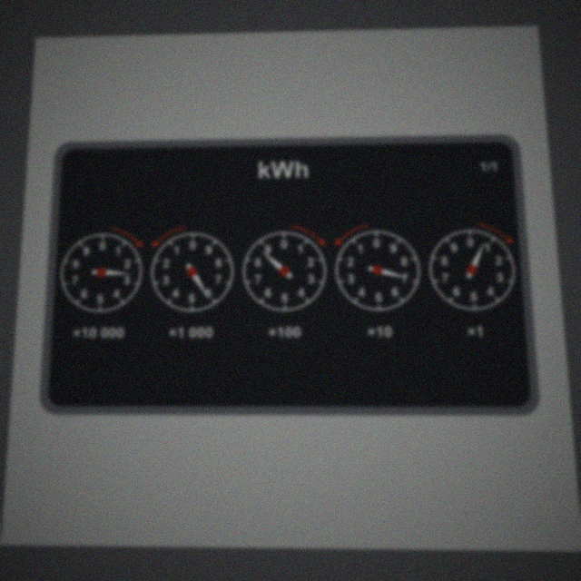
Clock-dial meter · dial_meter-L4-0003
Key: 25870 ± 0 · Model: 2.502e+04
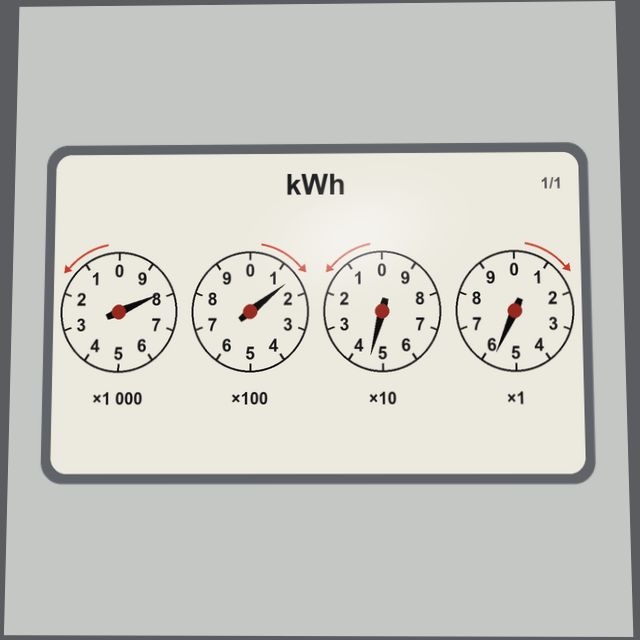
Clock-dial meter · dial_meter-L1-0005
Key: 8145 ± 0 · Model: 7145
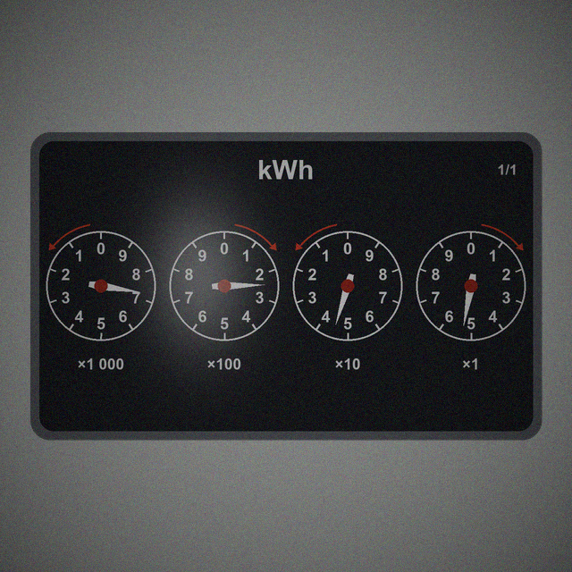
Clock-dial meter · dial_meter-L2-0006
Key: 7245 ± 0 · Model: 6255
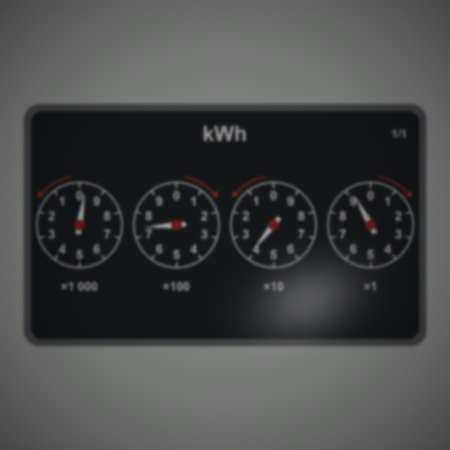
Clock-dial meter · dial_meter-L3-0007
Key: 9739 ± 0 · Model: 759
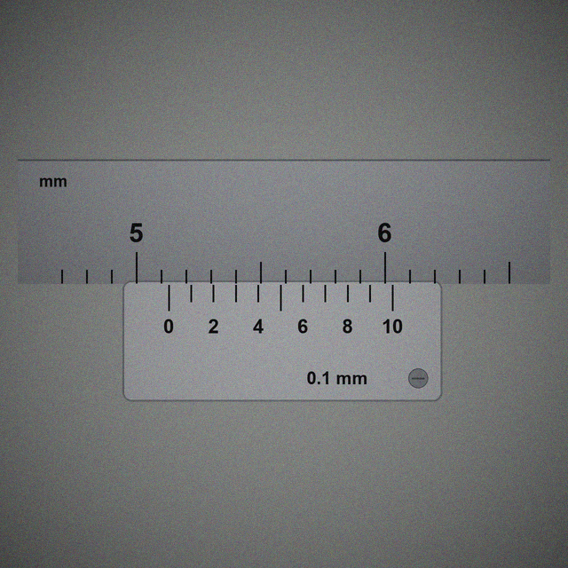
Vernier caliper · vernier-L1-0000
Key: 51.3 ± 0.05 · Model: 53
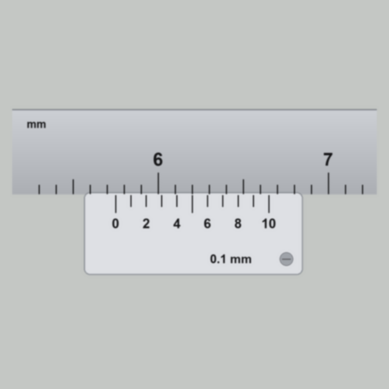
Vernier caliper · vernier-L2-0001
Key: 57.5 ± 0.05 · Model: 5.9
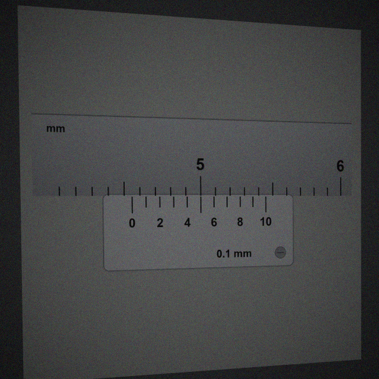
Vernier caliper · vernier-L3-0002
Key: 45.5 ± 0.05 · Model: 42.6
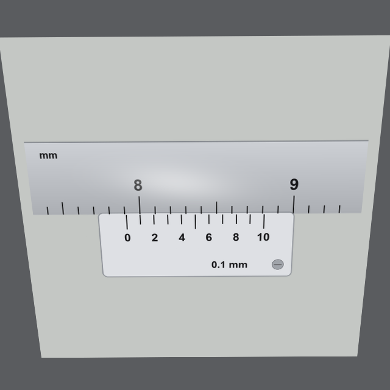
Vernier caliper · vernier-L4-0003
Key: 79.1 ± 0.05 · Model: 81.3
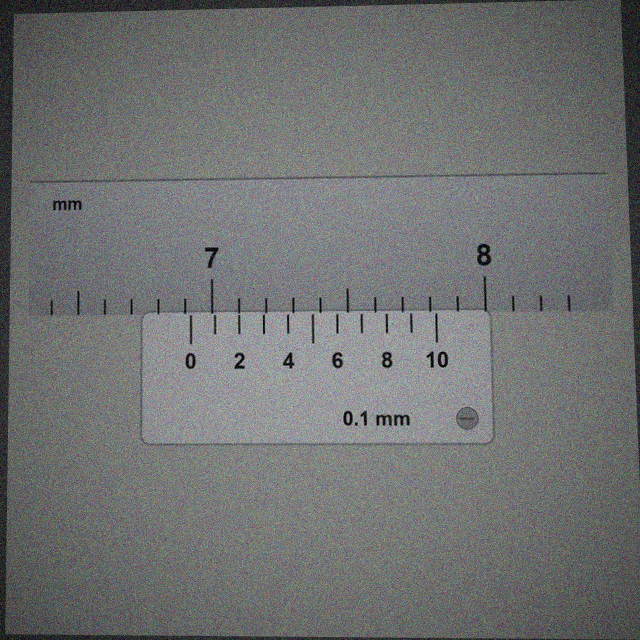
Vernier caliper · vernier-L5-0004
Key: 69.2 ± 0.05 · Model: 73.6